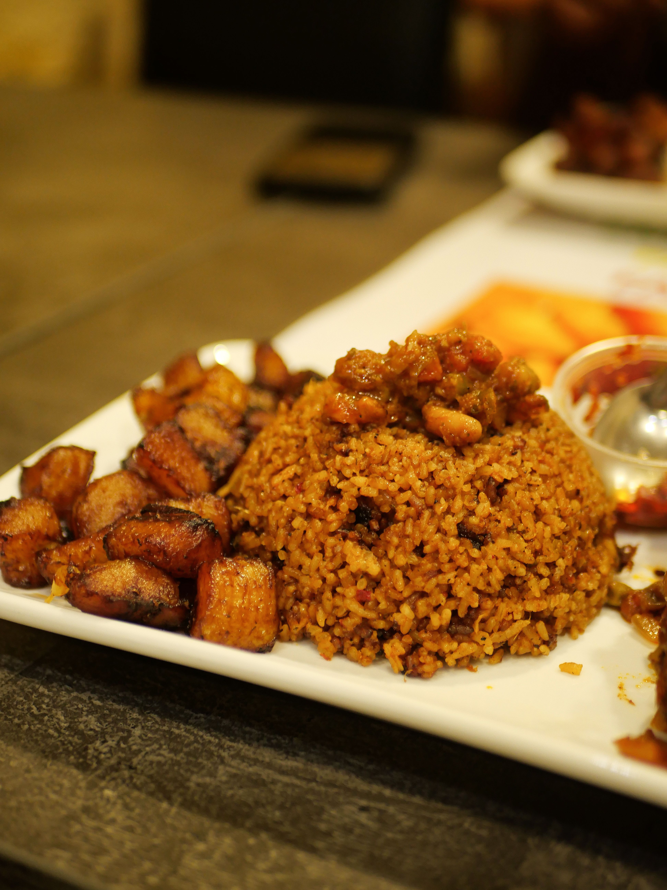

Jollof Rice
Home

Jollof rice is a West African dish, this version is a Nigerian version.
Ingredients:
-
6 cups long-grain parboiled rice rinsed
-
6 medium Tomatoes (600g)
-
3 large bell peppers (550g)
-
1-2 scotch bonnet peppers
-
1/2 small red onion
-
1/2 cup oil
-
1/2 cup chopped onion
-
12oz tomatoe paste (327g)
-
1 1/2 cups blended tomatoe sauce (410g)
-
2 1/2 tsp salt
-
1 tsp crushed bouillon chicken cube
-
1 tbsp dried thyme
- 2 bay leaves
- 1 tbsp curry powder
-
2 cups chicken stock
- 2 cups water
Instructions:
-
Season the chicken with chopped onions,
thyme, curry powder, salt, and crushed bouillon cubes.
-
Mix well, cover,
and let the chicken cook on low heat for 10 minutes (see note 1).
-
After about 10 minutes, add water and
let the chicken simmer a bit longer to create a rich stock.